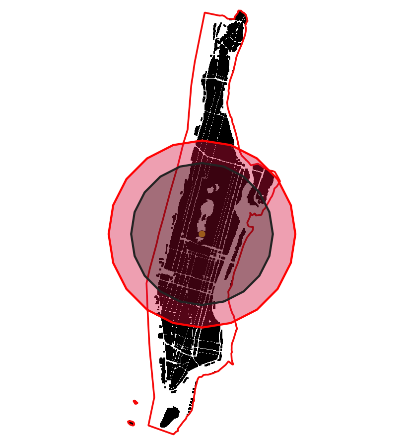

Introduction
In an earlier post, I demonstrated some of the problems associated with the Index of Moment of Inertia to characterise the compactness of urban form. One of the chief problems is related to the shape of the unit of analysis. In our case, it is the County. If the shape of the county is elongated, urban areas within these counties have conform to this shape. Because moment of inertia is calculated with respect to the circle, these areas are `unfairly’ penalised.
Illustration of the effect of landscape shape on IMI. County boundaries are in red, while black represents urban areas
In the above figures, IMI for Manhattan (New York, NY) is 0.27. It is one of the densest places in the US and among the most compact by many other measures. Yet IMI puts in the middle of the pack of all the counties in the continental US. Similarly, Portland (Multanomah, OR) has IMI of 0.53, while somewhat high, is not indicative of the reputation of the city and the region as a icon of growth management in the country. Examples like these are abound.
In this post, I will provide an characterisation of a index that will mitigate this issue to some extent.
Extent Shape Adjustment
Recall that IMI was defined as the ratio of MIs of the urban area and corresponding disk.
\[IMI_{undaj} := \frac{A^2}{2 \pi \sum_{i \in S} s^2 (\frac{s^2}{6} + d_i^2) \unicode{x1D7D9}_i } \]
where \(A\) is the area of the urban area and \(s\) is the raster resolution. IMI for the boundary/landscape shape can also be similarly defined, as long as the raster resolution is the same;call it \(IMI_p\). Define adjusted IMI as
\[IMI_{adj} := IMI_{unadj}^{IMI_p}\]
Recall that IMI is \((0,1)\). \(IMI_p\) for elongated shapes is closer to 0 and for more compact shapes like square and circles are closer to 1. Urban areas within landscapes that are ‘compact’ will have IMI similar to unadjusted IMI, while urban areas in elongated or in disconnected and distant (multi) shapes receive a much higher score than before. Since \(IMI_p < 1\), \(IMI_{adj} > IMI_{unadj}\). Thus, the adjustment is non-linear, monotonic and is bounded.

The ratios of MI of various polygons in the following figure illustrate the adjustment. Black represents urban areas, while the black circle is the corresponding circle of the same area. The red polygon is the county boundary, while the red circle is the corresponding circle of the same area as the boundary.
Urban Compactness Scores Redux
The shape adjusted urban compactness scores for 2011, can be downloaded here. It should be noted that the raster data comes from the National Land cover dataset and is pre-processed using various procedures described elsewhere. The boundary files for the US counties are downloaded from the US Census and include water. Future indices could correct these boundaries to exclude non-developable land (including high slopes). At the moment, this version of the index only accounts for shape of the county, but these other extensions are relatively straightforward.
At the first glance, the map above is not that different from the map of unadjusted IMI compactness scores. This is partly because many of the counties whose scores are likely to change because of the county shape are small and choropleth maps are a terrible way to visualise the information. However, the stability of the compactness score is apparent in the table below, which shows the to most compact county in each Census Division, especially when compared against the unadjusted IMIs. Only in Pacific (San Francisco) and New England (Suffolk) the most compact county has changed from the previous list.| Division | County | IMI | IMI_unadj |
|---|---|---|---|
| East North Central | Marion County, Indiana | 0.85 | 0.84 |
| East South Central | Shelby County, Tennessee | 0.70 | 0.67 |
| Middle Atlantic | Kings County, New York | 0.83 | 0.82 |
| Mountain | Salt Lake County, Utah | 0.77 | 0.76 |
| New England | Suffolk County, Massachusetts | 0.71 | 0.41 |
| Pacific | San Francisco County, California | 0.91 | 0.49 |
| South Atlantic | Roanoke city, Virginia | 0.85 | 0.84 |
| West North Central | St. Louis city, Missouri | 0.80 | 0.73 |
| West South Central | Dallas County, Texas | 0.74 | 0.73 |
Significant changes in the compactness score
It is thus useful to explicitly note where adjustment has changed the compact score most. Since percentage changes are susceptible to small numbers and because many of the counties have extraordinarily low scores (<.01), I only report the absolute changes.
| Division | County | IMI | IMI_unadj |
|---|---|---|---|
| East North Central | Rock Island County, Illinois | 0.58 | 0.20 |
| East South Central | Pickett County, Tennessee | 0.26 | 0.03 |
| Middle Atlantic | New York County, New York | 0.60 | 0.27 |
| Mountain | Denver County, Colorado | 0.71 | 0.33 |
| New England | Suffolk County, Massachusetts | 0.71 | 0.41 |
| Pacific | San Francisco County, California | 0.91 | 0.49 |
| South Atlantic | Fulton County, Georgia | 0.61 | 0.20 |
| West North Central | Pennington County, South Dakota | 0.30 | 0.06 |
| West South Central | Jefferson Parish, Louisiana | 0.68 | 0.17 |
Many of these counties experience significant changes in the compactness score. In particular, New York county (Manhattan) goes from 0.20 (relatively non-compact) to 0.61 (moderately compact). The largest gains seems to be in San Francisco, CA and Fulton, GA (Atlanta). While this adjustment seems to provide defensible indicators for San Francisco, the value for Fulton should remind us that IMI does not capture the effect of density by only the level of dispersion of fragmentary urban patterns.
In the following map, I show the spatial distribution of counties that experienced more than 0.1 change in index because of adjustment. The size of the circle is proportional to the size of the change. The changes are more apparent in this dot plot than the choropleth map.
It is interesting to note that there is little relationship between level of urbanisation of a county and the change in the IMI score, on average. The following figure shows how much variation there is in the IMI changes because of the adjustment.
Conclusions
While the current adjustment for landscape shape makes the IMI more representative of the compactness of urban form, it should be noted that it does not fully capture our intuitive understanding of compact urban form. Thus, it should be used with other indicators to fully capture the richness of the multi-dimensionality of urban condition.